기획: 화면보다 글이 먼저
강사는 모바일 앱보다 웹앱이 어렵다고 봐요. 화면이 작으면 재사용 요소를 끌어다 놓기만 해도 대충 괜찮아 보이는데, 노트북 크기로 캔버스가 커지면 금방 투박하고 어설퍼 보이거든요. 이 강의는 대시보드, 차트, 데이터 테이블, 폼을 갖춘 데스크톱 웹앱 하나를 처음부터 그려요. 결과물을 그대로 베끼지 말고 과정만 가져가서 자기 포트폴리오용 제품을 만들라고 해요.
로우 피델리티 와이어프레임은 건너뛰고 곧장 하이 피델리티로 가요. 그 대신 피그마를 열기 전에 텍스트 편집기에서 기획을 끝내요. 영상은 iA Writer를 쓰지만 구글 문서나 메모장도 괜찮다고 해요. 쓰면서 앞의 결정을 고치고, 고친 내용이 또 다른 결정을 바꾸는 왕복이 필요해서, 이 단계에서는 그림을 하나도 그리지 않아요.
무엇을 파는 회사인가요
차트, 그래프, 대시보드, 폼, 데이터 테이블이 다 나오는 이커머스 계열이 연습에 좋다고 해요. 이 블록들은 다른 제품에도 그대로 쓸 수 있어요. 예제는 비건 샌드위치 체인의 배달 관리 앱이고, 암호화폐 거래소나 법률 문서 템플릿 장터처럼 전혀 다른 주제로 해도 된다고 해요.
먼저 팔 상품 다섯 개를 재료까지 적어요. Classic Avo(아보카도, 사워도우, 고수, 루콜라, 두부), Hi Tomato, Eggplant Delight, Mushy Mushy, Miss Bean이에요. 상품을 미리 정해 두면 나중에 표와 카드에 넣을 실제 같은 데이터가 생겨요.
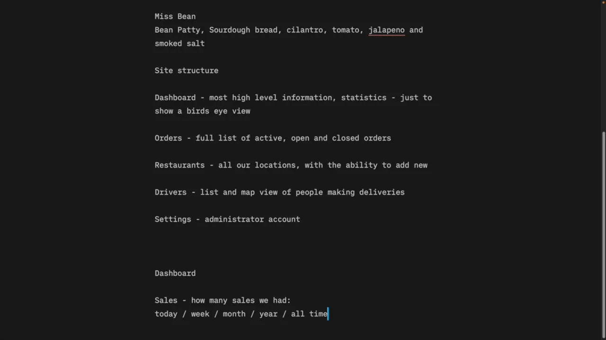
탭마다 무엇을 보여 줄까요
사이트 구조는 대시보드, 주문, 매장, 드라이버, 설정 다섯 탭이에요. 아래 그림은 영상이 글로 적은 내용을 탭별로 묶은 거예요.
대시보드에서 관리자가 가장 많이 보는 건 매출이에요. 오늘, 이번 주, 이번 달, 올해, 전체 매출을 금액과 작은 그래프로 보여 줘요. 한 도시의 지도에는 진행 중인 배달과 매장을 표시하고, 매장 옆에 배달 건수 말풍선을 달아요. 최근 주문 목록에는 고객이나 드라이버에게 바로 전화·문자하는 버튼을 둬요. 주문이 꼬이거나 안 왔을 때 바로 손을 쓸 수 있어야 해서예요.
주문 탭에서는 꾸미고 싶은 마음을 참으라고 해요. 매장을 운영하는 사람은 특정 주문을 찾고 조치하려고 이 화면을 열어요. 그래서 검색·정렬·필터가 되는 표면 충분해요. 열은 고객 이름, 주문 내용, 주문 ID(Identifier), 드라이버, 매장, 배달 주소, 주문 상태예요.
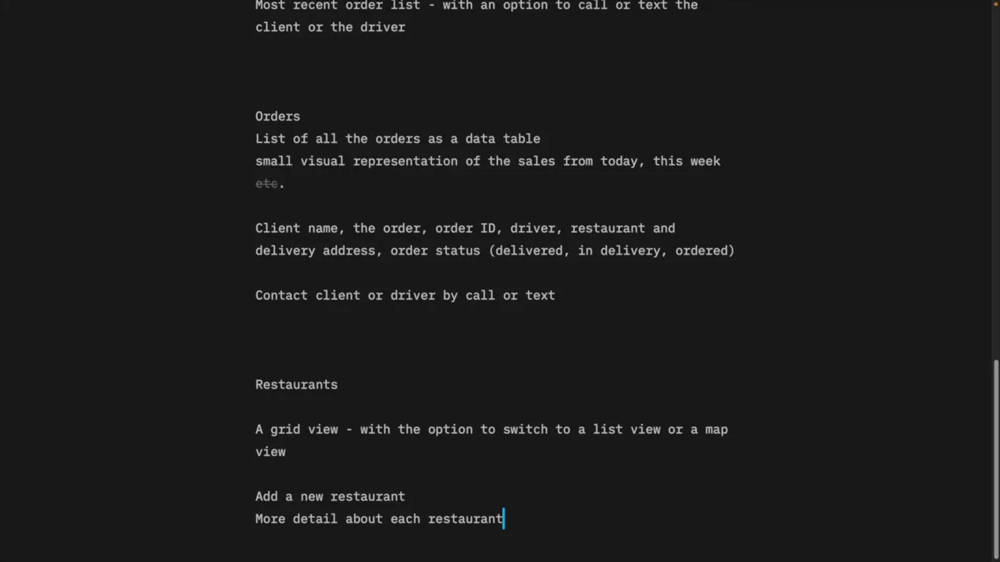
매장을 누르면 직원 수, 접수된 불만, 영업시간, 배달 범위와 요금을 보고 고칠 수 있어요. 드라이버 탭은 매장·지역·현재 근무 여부로 거르는 목록과, 오늘 배달 수·누적 배달 수, 지도 위 위치를 보여 줘요. 강사는 작업하면서 상품 페이지처럼 새 아이디어가 나올 거라고 미리 말해 둬요. 실제로 상품 탭이 나중에 추가돼요.
12컬럼 그리드와 레드 스퀘어 메서드
피그마로 넘어가면 실제 화면을 그리기 전에 연습장(Playground) 프레임에서 그리드와 간격 규칙부터 익혀요. 캔버스는 1500×1000이에요. 강사는 이 크기가 드리블에 올리는 샷 크기와 같아서, 강의 결과물을 바로 올릴 수 있다고 해요.
12컬럼 레이아웃 그리드
레이아웃 그리드를 추가하고 종류를 Columns로 바꿔요. 컬럼은 12개예요. 12는 12 하나, 8과 4, 6과 6, 4 세 개, 3 네 개처럼 여러 조합으로 나뉘어서 가장 유연해요. 노트북 화면 양옆에 여백이 남도록 Stretch 대신 Center로 두고, 컬럼 폭 64, 거터 32를 넣어요. 거터를 컬럼의 절반으로 두면 계산이 쉽고 대부분의 화면에 여백이 충분해요.

12컬럼을 가로지르는 사각형을 그리면 폭이 1120이 나와요. 이게 웹앱의 최대 폭이에요. 높이는 750으로 잡아요. 예전에는 폴드를 600~660픽셀쯤으로 봤지만 지금은 750도 괜찮다고 봐요. 모서리는 32만큼 둥글려요. 그리드 색은 처음에 빨강이었다가, 초록 위주로 갈 디자인과 부딪히지 않게 연한 파랑으로 바꿔요.
레드 스퀘어 메서드
레드 스퀘어 메서드는 간격 크기의 빨간 정사각형을 만들어 두고, 요소 사이에 직접 끼워 거리를 맞추는 방법이에요. 모든 거리를 8의 배수로 쓰는 8포인트 그리드를 전제로 해요. 강사는 8, 16, 24, 32, 40, 48 정사각형을 만들고, 필요하면 64까지 쓴다고 해요.

모바일 앱에서는 8~32의 앞쪽 네 개를 주로 써요. 16과 24는 요소 사이, 32는 큰 섹션 사이예요. 웹은 캔버스가 훨씬 커서 24, 32, 40을 가장 많이 써요.
강사가 이 방법을 쓰는 이유도 분명해요. Alt 키를 누르면 피그마가 거리를 보여 주지만, 정사각형을 직접 옮기면 여백이 손에 잡히는 물체가 돼요. 그래서 배치 감각을 익히는 연습으로 더 낫다는 거예요.
블록으로 배치 짜기
내비게이션은 2컬럼 폭 사이드바로 시작해요. 가로로 긴 표가 많은 제품이라면 2컬럼 메뉴가 아까울 수 있어요. 그럴 때는 메뉴를 아이콘만 남기고 접거나 상단 메뉴로 바꿔요. 이 강의는 2컬럼으로 가고, 양옆에 거터를 하나씩 더 붙여 바탕을 넓혀요. 그러면 메뉴가 조금 넓어지고 표 양옆 여백도 같아져요.
그 안에 검색 바, 표, 지도, 목록, 배너 두 개 같은 블록을 사각형으로 쌓아 봐요. 화면 안에서 끝나는 대시보드라면 사방 32를 띄우고, 길게 스크롤되는 표라면 아래가 화면 끝에 닿아도 돼요.
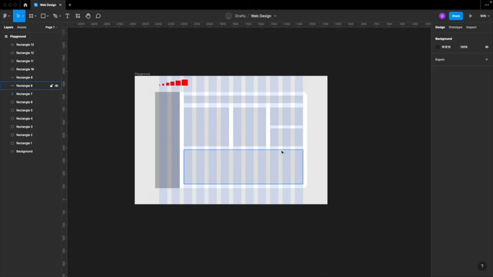
세로 간격만 24로 줄이는 변형도 보여 주지만, 처음이라면 어디든 32를 쓰라고 해요. 여백이 조금 넉넉해서 손해 볼 일은 없다는 거예요. 블록 높이는 8의 배수가 아니어도 괜찮아요. 표 하나가 267이 나와도 나머지가 나누기 쉬운 숫자면 신경 쓰지 않아도 돼요.
간격이 묶음을 말해요
블록 안쪽에는 제목, 설명 두 줄, 이미지를 사각형으로 놓아 봐요. 바깥 여백도 32로 하고 싶어지지만, 그러면 안 된다고 해요.
The distance actually shows what elements are grouped together.
거리가 곧 어떤 요소끼리 한 묶음인지를 보여 줘요.
— 영상 33:19
32는 묶음과 묶음을 가르는 데 쓰니, 블록 안쪽은 24나 16으로 줄여요. 제목과 설명은 더 작은 묶음이라 16으로 붙여요. 이미지는 사방 24를 두고, 글과 한 덩어리로 보이게 하려면 16, 조금 떼어 읽기 편하게 하려면 24를 줘요. 완전히 같은 여백은 아니지만 훑어보기에 충분히 고른 상태가 돼요. 이게 근접성 원칙이에요.
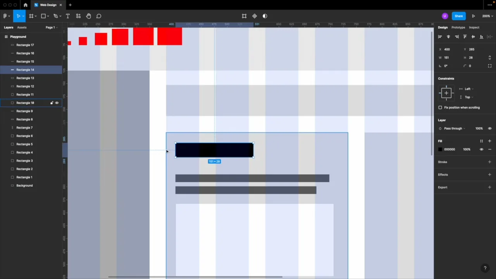
오토 레이아웃은 나중에
요즘은 오토 레이아웃이 간격을 알아서 맞춰 주는데 왜 손으로 하냐는 질문에, 강사는 원리를 모른 채 자동화에 기대면 잘못된 걸 알아보지 못한다고 답해요. 특히 글꼴 쪽에서 오토 레이아웃이 정렬을 흐트러뜨리는 일이 잦다고 해요.
Don't use auto layout until you learn to manually lay out and align everything perfectly.
손으로 모든 걸 완벽하게 배치하고 정렬할 수 있게 될 때까지 오토 레이아웃은 쓰지 마세요.
— 영상 36:34
처음 몇 개, 많게는 수십 개 디자인은 오토 레이아웃 없이 연습하고, 눈으로 어긋남이 보일 때부터 쓰라고 해요.
섹션 끝 슬라이드에는 블록 배치로 연습해 볼 거리가 적혀 있어요. 화면에만 나오고 말로는 하지 않는 목록이에요.
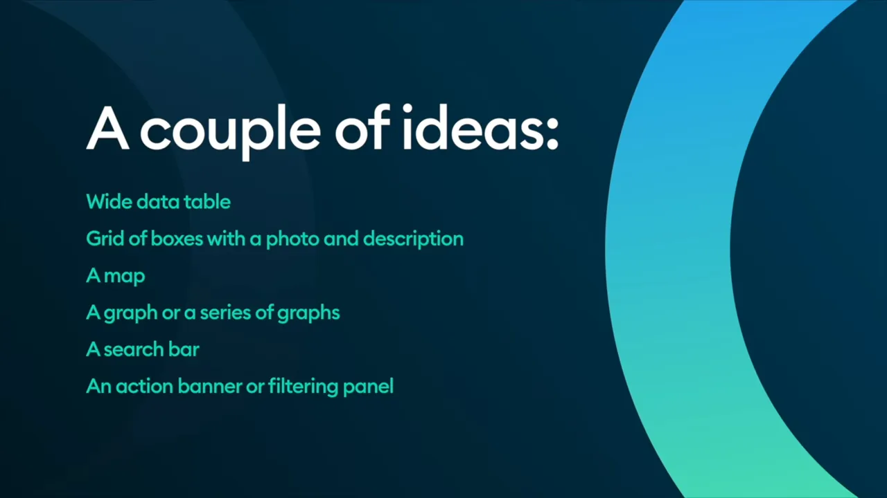
사진과 에셋 다듬기
대시보드를 그리기 전에 쓸 재료를 준비해요. 이 제품에는 사람 사진(관리자와 드라이버), 배달용 초록 스쿠터, 아보카도 일러스트가 필요해요. 강사는 이 손질 단계를 '프렙 워크'라고 부르고, 벡터 요소를 잘 만든 다음에는 사진 손질이 디자인을 돋보이게 하는 차이가 된다고 해요.
사진 고르는 기준
제일 중요한 건 사진끼리의 일관성이에요. 스타일, 색감, 동그란 프로필 안에서의 얼굴 크기까지 똑같이 맞춰야 해요. 고를 때 보는 기준은 이래요.
- 대체로 카메라를 보고 있나요? 고개를 살짝 기울인 정도는 괜찮지만 완전히 옆을 보면 어색해요.
- 옷이 단순한가요? 꽃무늬 셔츠는 작게 줄이면 알록달록한 픽셀 덩어리가 돼요.
- 색이 너무 튀지 않나요? 초록 위주의 앱에 새빨간 셔츠는 시선을 빼앗아요.
- 배경을 지울 수 있나요? 단순한 흰 배경이 아니라면 지우는 게 깔끔해요.
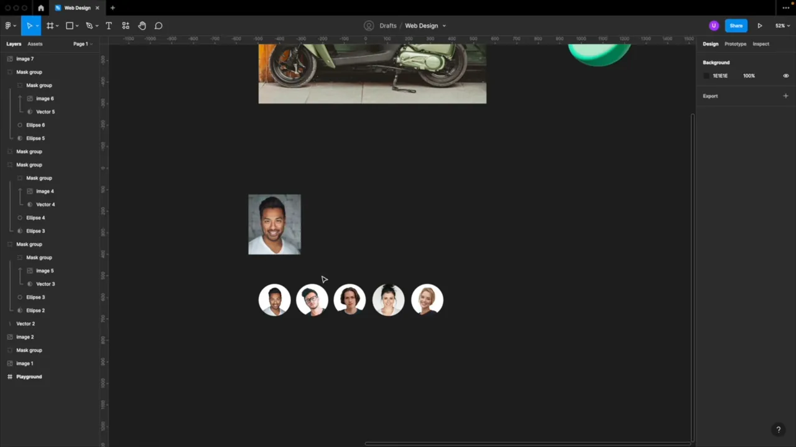
사진은 모두 무료 사진 사이트 Unsplash에서 받았어요. 배경은 AI(Artificial Intelligence) 배경 제거 도구로 지워도 되지만, 강사는 펜 툴로 사람 외곽을 직접 따는 방법을 보여 줘요.
펜 툴로 따고 마스크 씌우기
사진을 크게 확대하고 펜 툴로 사람 둘레를 찍어 나가요. 결과물을 작게 줄일 거라 정밀할 필요가 없어요. 조금 각져도 되고, 복잡한 부분은 건너뛰어도 돼요. 머리카락은 외곽에 살짝 들쭉날쭉한 홈만 있으면 자연스러워 보여요.
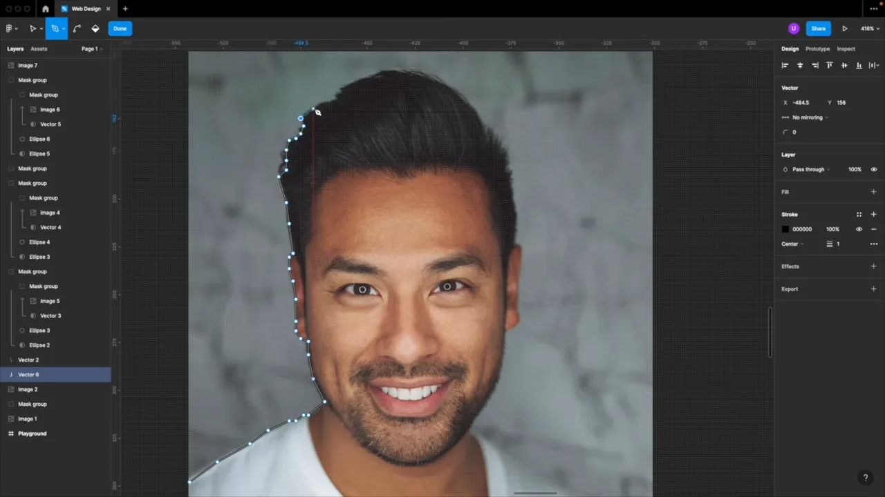
외곽선을 다 따면 선을 지우고 채우기를 넣은 뒤, 레이어 목록에서 사람 사진 아래로 내리고 둘을 함께 골라 마스크로 써요. 그다음 원(148×148)을 두 개 겹쳐 하나는 마스크, 하나는 배경으로 쓰면 원 안에 머리가 들어간 프로필이 돼요.
얼굴 크기는 보조 원으로 맞춰요. 프로필 원 지름의 3분의 2쯤 되는 반투명 빨간 원을 가운데 두고, 얼굴과 이마 대부분이 그 안에 들어오게 사진을 키우거나 옮겨요. 다섯 장 모두 같은 원으로 맞추면 얼굴 크기가 통일돼요.
채도와 노출 맞추기
다섯 장을 다 자르면 채도가 가장 낮은 사진을 기준으로 삼아요. 나머지 사진마다 이미지 채우기 설정에서 채도를 낮추고, 너무 어두운 사진은 노출을 살짝 올려요. 과하게 밝히면 안 돼요.
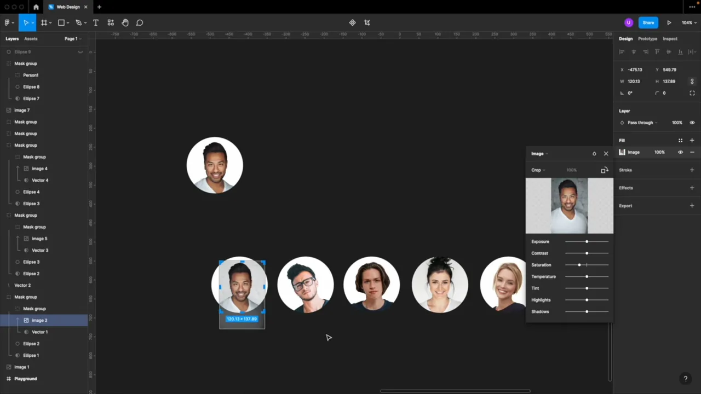
강사는 이런 디테일을 면접이나 지원서에서 말해 보라고 해요. 사진까지 디자인 스타일에 맞춰 손봤다는 건 디테일을 챙기는 사람이라는 증거가 된다는 거예요.
튀는 색은 덧그려 덮어요
마지막 사진에는 손에 든 주황 서류철이 살짝 보여요. 주황은 이 디자인 어디에도 없는 색이에요. 마스크 안쪽의 사진 레이어로 들어가 펜 툴로 셔츠 모양을 그리되, 서류철까지 덮도록 조금 크게 그려요. 아래쪽은 어차피 마스크로 잘리니 아무렇게나 그려도 돼요. 채우기 색은 셔츠에 이미 있는 색을 스포이트로 골라요.
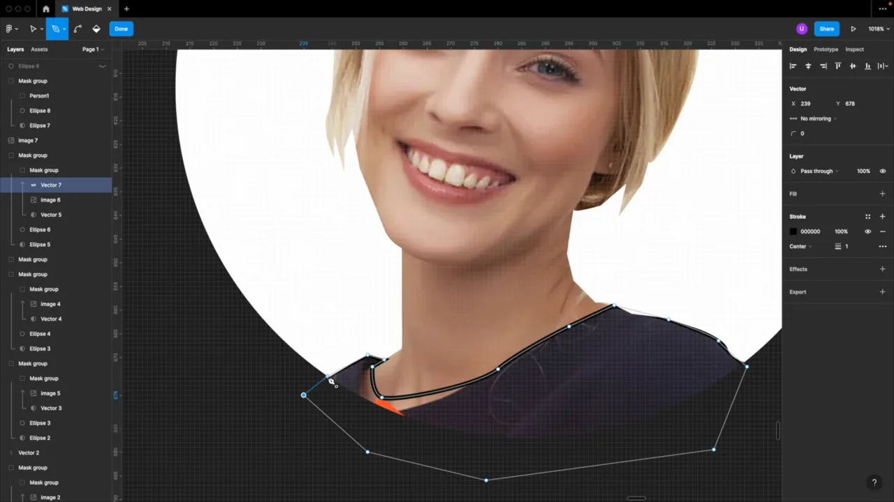
푸르스름한 회색 셔츠들도 같은 방식으로 다시 칠해서, 모든 사람이 피부색과 흑백 옷만으로 이뤄지게 해요.
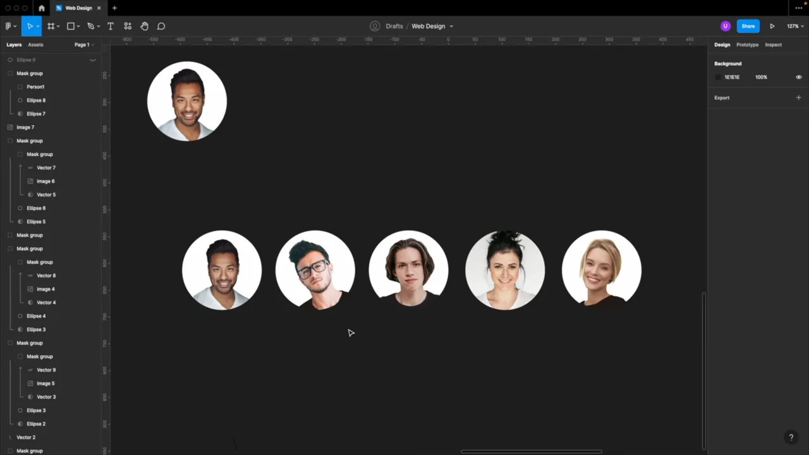
스쿠터를 구멍까지 따내기
배달용 스쿠터는 펜 툴 연습에 좋은 재료예요. 먼저 물체 전체 외곽을 따요. 쓰지 않을 뒤쪽 짐받이는 아예 빼고 그 위로 지나가요. 그다음 바퀴 살 사이처럼 뚫려야 하는 안쪽 모양을 하나씩 따로 그려요. 강사는 AI 배경 제거 도구가 사물에는 아직 잘 맞지 않는다고 봐요.
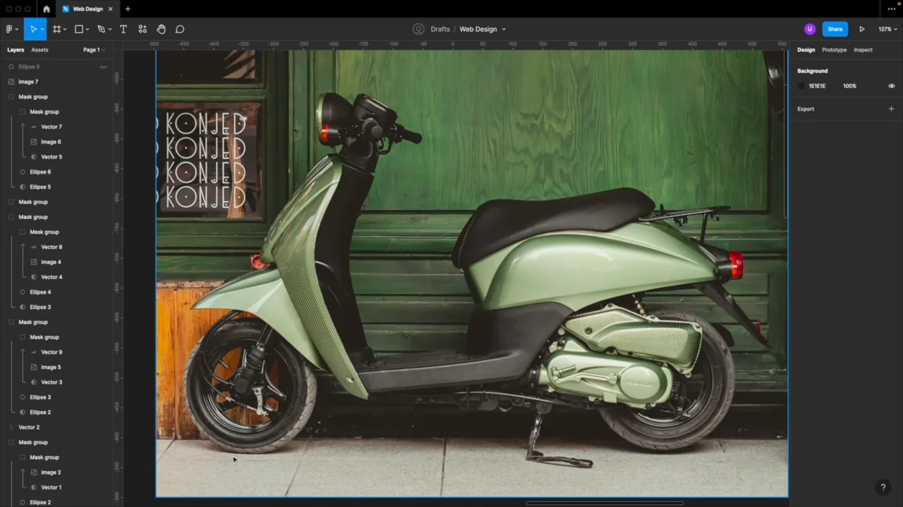
모든 벡터에 채우기를 넣고, 가장 복잡한 외곽을 뺀 나머지를 골라 불리언 연산의 빼기(Subtract selection)를 하면 구멍이 뚫린 모양이 나와요. 이 모양 위에 사진을 올려 마스크로 쓰면 배경이 사라져요. 마지막으로 바깥을 향하도록 좌우를 뒤집어요.
초록 부분은 개별 모양으로 다시 따서 새 초록을 채우고 블렌드 모드(곱하기, 스크린, 오버레이 등)를 고른 뒤 투명도를 낮춰요. 한 모양에 설정을 끝내면 나머지에는 속성 복사·붙여넣기로 똑같이 입혀요.
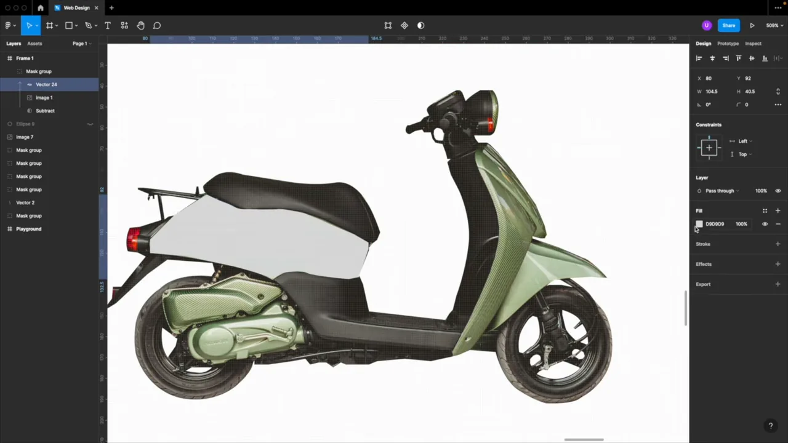
이렇게 만든 스쿠터는 완전히 '우리 것'이 돼요. 어떤 색 조합을 고르든 바로 맞출 수 있어요. 앞으로 쓸 다른 사진도 같은 방식으로 다듬고, 나머지 요소는 전부 벡터로 직접 그린다고 해요.
왼쪽 내비게이션
연습장 프레임을 복제해 안을 비우고, 모든 화면에 들어갈 왼쪽 내비게이션부터 그려요. 메뉴는 앞에서처럼 2컬럼 폭이고, 바탕과 같은 32만큼 모서리를 둥글려요.
가까운 것이 더 밝아요
오른쪽에는 흰 카드들이 떠 있게 할 거예요. 눈에 가까운 것일수록 밝게 보이는 원리를 쓰려면 바탕이 흰색이면 안 돼요. 그래서 바탕은 F5 정도의 밝은 회색으로 하고 메뉴만 흰색으로 둬요. 구분이 약하면 F1처럼 조금 더 어둡게 해도 돼요.
로고와 글꼴
간단한 제품 로고는 가장 단순한 서체를 굵게 쓰고, 아주 단순한 도형 하나를 붙이는 게 좋다고 해요. 이름은 Avo Club이에요. 글꼴로는 무료이면서 안전한 Inter, Plus Jakarta Sans, Satoshi를 추천하고, 그중 가장 굵은 Satoshi Black을 써요. 독특한 글꼴로 가면 처음에는 어딘가 어색한 디자인이 나오기 쉽다는 이유예요.
도형은 타원의 위쪽 점을 끌어올려 아보카도 모양 달걀꼴을 만들고, 위는 푸른 기가 도는 초록, 아래는 노란 기가 도는 초록으로 그라데이션을 줘요. 작은 원을 빼서 씨 자리 구멍을 뚫어요. 대문자 높이가 9라면 도형은 그 두 배쯤, 도형과 글자 사이는 8 정도예요.
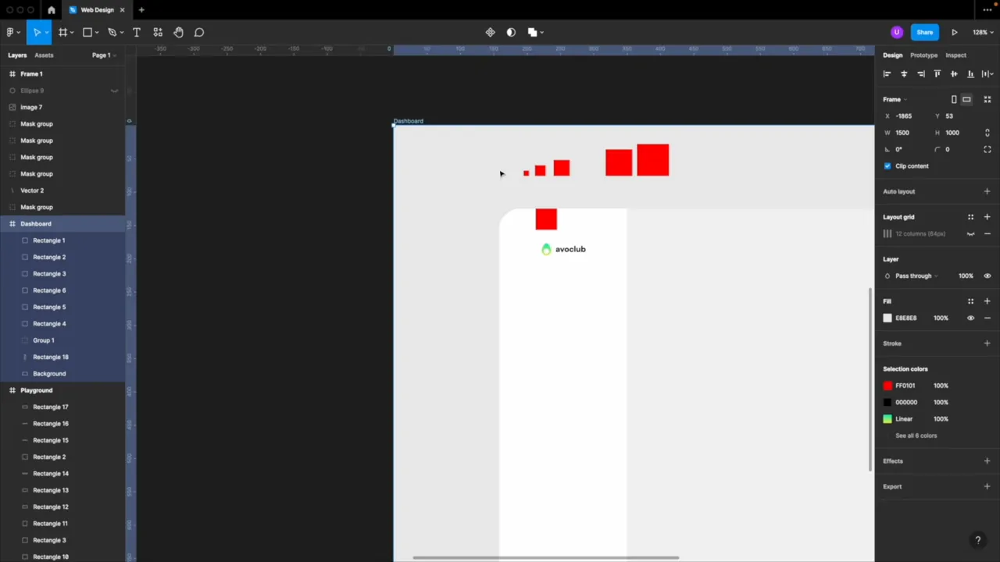
메뉴 항목과 아이콘
메뉴는 대시보드, 주문, 매장, 드라이버 네 개예요. 글자는 14pt로 줄이고 너무 굵지 않은 미디엄이나 볼드를 써요. 아이콘은 16×16 틀 안에 직접 그려요. 대시보드는 작은 사각형 네 개, 주문은 쇼핑백, 매장은 위치 핀, 드라이버는 모자를 쓴 사람 모양이에요. 색은 2E2E2E로 통일하고, 로고만 완전한 검정으로 둬서 대비를 더 줘요.
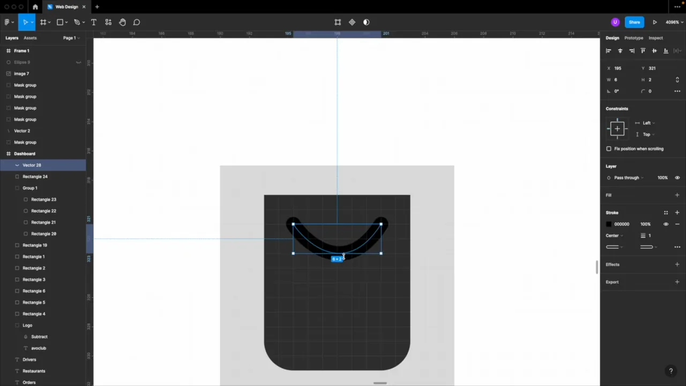
배치 간격은 로고 위가 32, 로고 아래에서 첫 메뉴까지는 그 두 배인 64, 메뉴 항목 사이는 40이에요. 아이콘은 로고 도형 아래에 세로로 가운데 정렬해요. 메뉴가 더 길다면 항목 사이를 32로 줄여도 돼요.
선택 상태와 배지
선택된 메뉴는 메뉴 틀 밖으로 살짝 나와도 돼요. 왼쪽과 오른쪽에 24 정사각형을 대고 그 사이를 짙은 색 사각형으로 채워요. 초록은 알림처럼 중요한 곳에 아껴 쓰려고 선택 상태는 짙은 색으로 하고, 모서리는 8, 높이는 44로 해요. 44는 모바일 터치 영역으로도, 데스크톱 클릭 영역으로도 괜찮은 크기라고 해요.
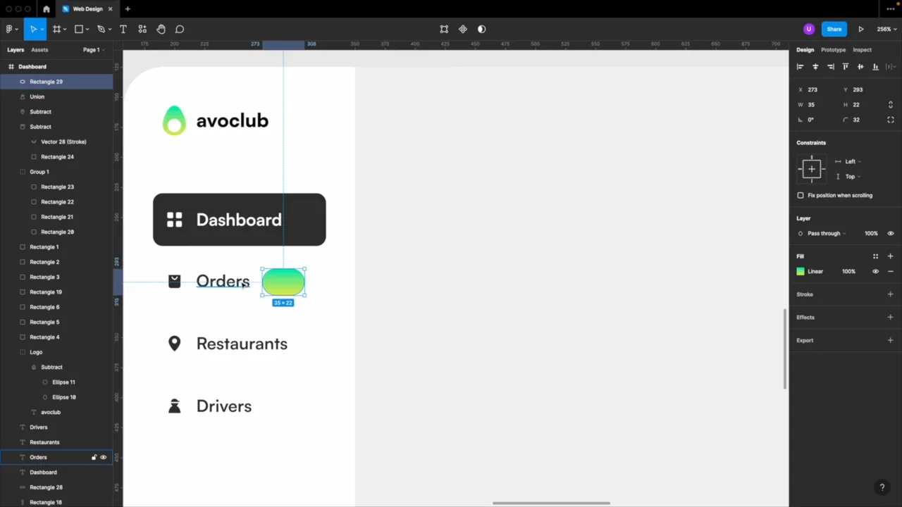
주문 메뉴의 배지는 진행 중인 주문 수(217)를 보여 줘요. 누르는 요소가 아니라 작게 만들어요. 배지 세로 중심은 'Orders' 글자의 O 한가운데를 지나야 해요. 위아래 여백이 같아야 하고, 숫자가 배지의 곧은 구간 밖으로 나가면 안 된다는 기준도 덧붙여요.
맨 아래 프로필 영역
메뉴 맨 아래에는 관리자 Anna Wells의 프로필을 둬요. 사진은 32에서 시작했다가 36으로 키우고, 흰 배경 위에서 잘 보이게 원 배경을 조금 어둡게 칠해요.
여기서 그리드를 일부러 벗어나요. 메뉴 모서리가 둥글어서, 왼쪽·아래 거리와 대각선 거리가 비슷해 보이는 지점을 찾아야 하거든요. 결국 18로 정해요. 그러면 흰 바탕이 동그란 사진을 감싸 흐르듯 보여요. 이름과 사진 사이는 16이고, 위에 아주 연한 구분선을 그어 위아래도 18 정도로 맞춰요.
그 위에는 'Done for the day?' 문구와 Send daily report 버튼을 둬요. 하루를 마칠 때 상급 관리자에게 일일 보고를 보내는 버튼이에요. 처음에는 로고 그라데이션을 대각선으로 돌려 입혀 보다가, 과하다고 판단해 단색 초록으로 바꿔요. 종이비행기 아이콘은 삼각형 두 개를 빼기 연산해서 만들고, 버튼 높이는 38로 낮춰요.
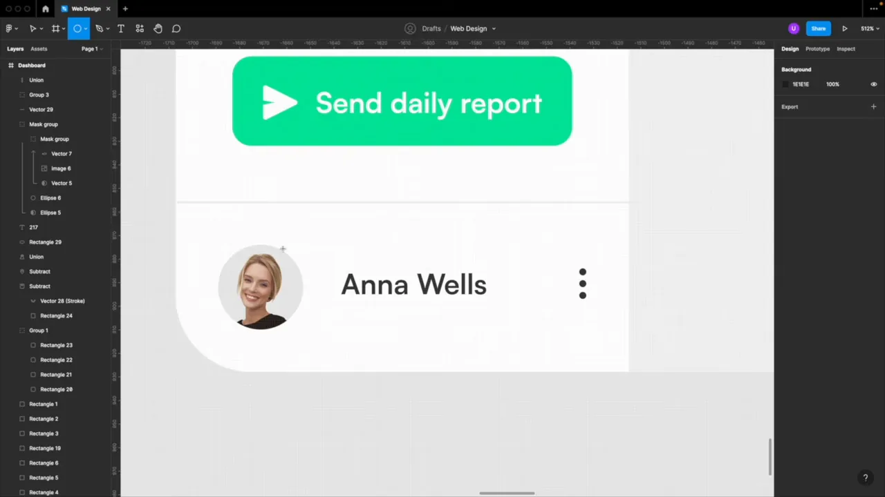
버튼 글자와 아이콘이 세로 가운데에서 0.5포인트쯤 어긋나면 파란 보조 사각형을 대 보고 0.5를 더해 맞춰요. 개발할 화면이 아니라 포트폴리오용이라 소수점도 괜찮다는 설명이에요. 알림 점은 8포인트 원에 흰 테두리를 둘러 회색 바탕에서 도드라지게 해요.
대시보드 블록 채우기
메뉴 오른쪽에 대시보드 본문을 채워요. 이 섹션이 강의에서 가장 길어요. 짧은 데이터 테이블, 요약 숫자, 그래프, 프로모션 배너, 사람 목록, 지도처럼 다른 화면에서도 다시 쓰는 블록이 여기서 대부분 나와요.
블록 나누기와 검색 바
레이아웃 그리드를 다시 켜고 블록을 나눠요. 아래쪽에는 최근 주문 6컬럼, 오른쪽 지도 4컬럼을 두고, 위에는 매출 그래프, 오른쪽에는 드라이버와 프로모션 칸을 둬요. 맨 위에는 검색과 필터를 넣을 얇은 띠를 남겨요. 블록 높이는 일부러 다르게 해서 주문은 작게, 그래프는 크게 둬요.
검색 바는 메뉴의 시각적 시작선에서 32 아래부터 41포인트 높이로 잡아요. 그중 1포인트는 아래 밑줄이라 내용 영역이 딱 40이 돼요. 돋보기 아이콘은 지름 14 원에 2포인트 선을 써요. 선이 1포인트면 홀수, 2포인트면 짝수 크기 원을 쓰는 게 좋다는 팁도 줘요.
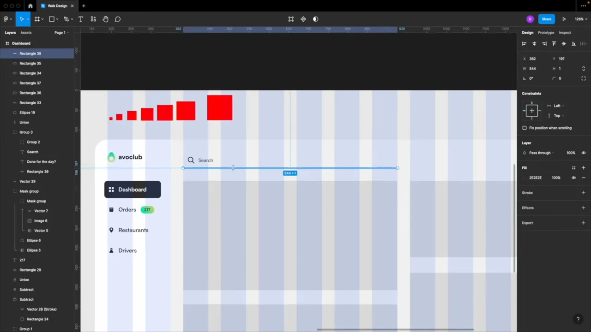
짧은 데이터 테이블: 최근 주문
주문 블록은 흰색, 모서리 8로 하고 제목 'Orders'는 크게, 굵지 않게 써요. 글자가 크면 이미 잘 보이니까요. 열 이름은 매장, 주문, 주문 ID, 금액, ETA(Estimated Time of Arrival), 연락이에요. 열 이름은 본문 색에서 밝기를 40~50 올려 연하게 하되, 그 이상은 올리지 않아요. 너무 연하면 안 보이거든요.
데이터 행은 열 이름과 같은 거리를 두고 복제해요. 기준선에서 기준선까지 24 간격으로 행을 쌓아요. 똑같은 행만 복제해 두면 어색해 보여서 값을 다양하게 바꿔요.
The thing about data tables is that they need variety to look real and they need variety to look good.
데이터 테이블은 진짜처럼 보이려면, 그리고 보기 좋으려면 다양해야 해요.
— 영상 1:37:13
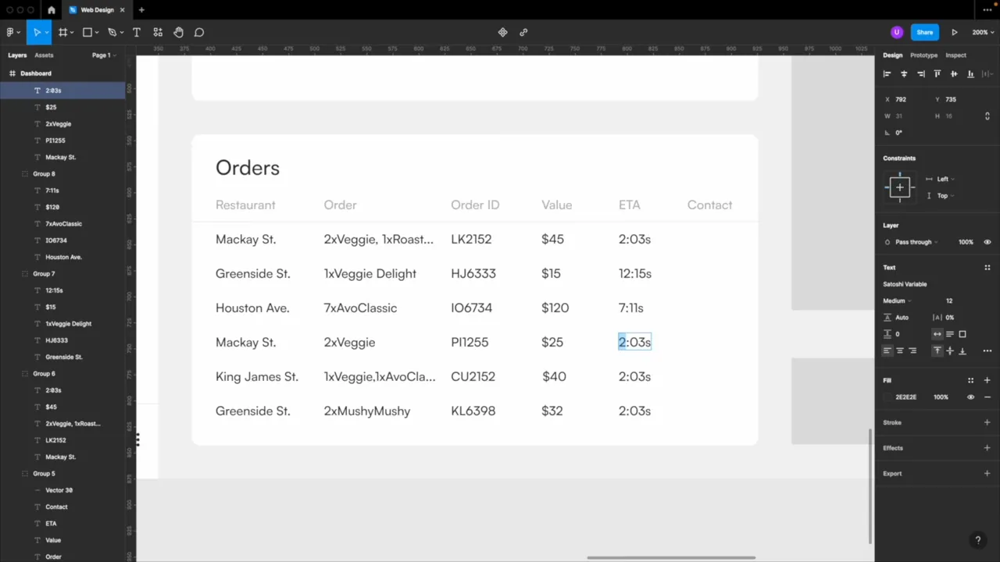
정렬 규칙도 여기서 처음 나와요. 거리 이름, 주문 ID, 샌드위치 이름 같은 글자는 열 이름의 왼쪽 끝에 맞추고, 금액과 시간 같은 숫자는 오른쪽 끝에 맞춰요. 이 규칙은 다음 섹션의 주문 탭에서 자세히 다뤄요.
열 사이 거리는 길이를 예상할 수 있는 열(ID, 금액, ETA)만 24로 맞춰요. 주문 내용처럼 길이를 알 수 없는 열은 넉넉히 둬요. 연락 열에는 전화 아이콘을 놓아요. 표는 ETA 순으로 정렬해 두고, ETA 열 이름 뒤에 연한 배경과 위쪽 화살표를 달아 오름차순임을 보여 줘요. 배달 직전이라 전화를 받지 않는 드라이버의 전화 아이콘은 연하게 바꿔요.
표 위의 요약 숫자
표만 있으면 지루하니, 오늘 기준 요약 숫자 세 개를 표 위에 올려요. 진행 중 64, 배달 완료 137, 합계 201이에요. 각 숫자 왼쪽에는 38×38 둥근 사각형 아이콘 박스를 둬요. 색은 로고 초록을 밝게, 채도를 낮춰 써요. 표에 시선이 너무 쏠리지 않게 '보이되 너무 튀지 않게' 하는 거예요.
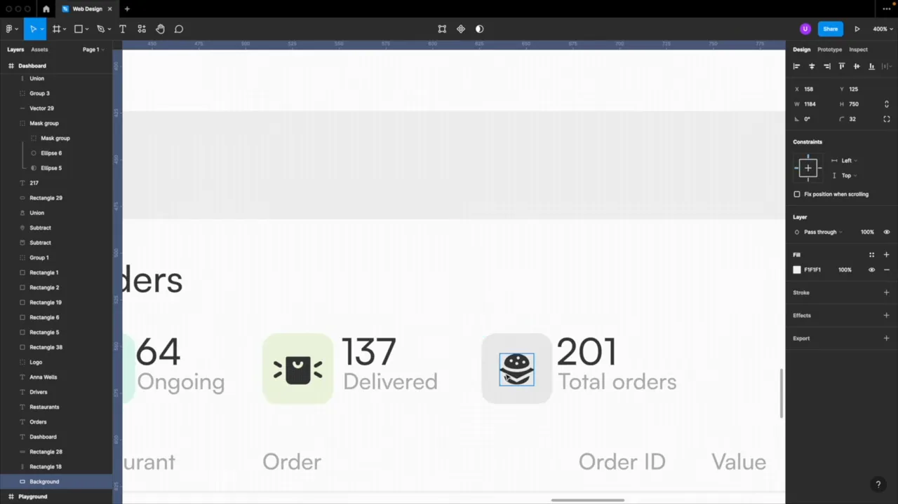
숫자와 설명 사이는 4, 박스와 숫자 사이는 16을 시험해 보고 너무 멀어서 8로 줄여요. 세 묶음은 좌우 24 안쪽 폭(496)을 3으로 나눈 165 보조선에 맞춰 배치해요. 1픽셀이 모자라면 칸마다 1씩 줄여 164로 맞춰요.
매출 숫자와 그래프
매출 블록에도 같은 숫자 묶음을 재사용해요. 오늘 1,240달러는 어제보다 좋으니 아이콘 박스를 초록 계열로 하고, 위로 오르는 구불구불한 선을 그려요. 이번 달 45,200달러는 지난달보다 나빠서 빨간 계열로 바꾸고, 선을 좌우로 뒤집어 하락을 보여 줘요. 올해 229,710달러는 다시 초록이에요. 숫자 색까지 바꾸자는 사람도 있지만 강사는 아이콘만으로 충분하다고 봐요.
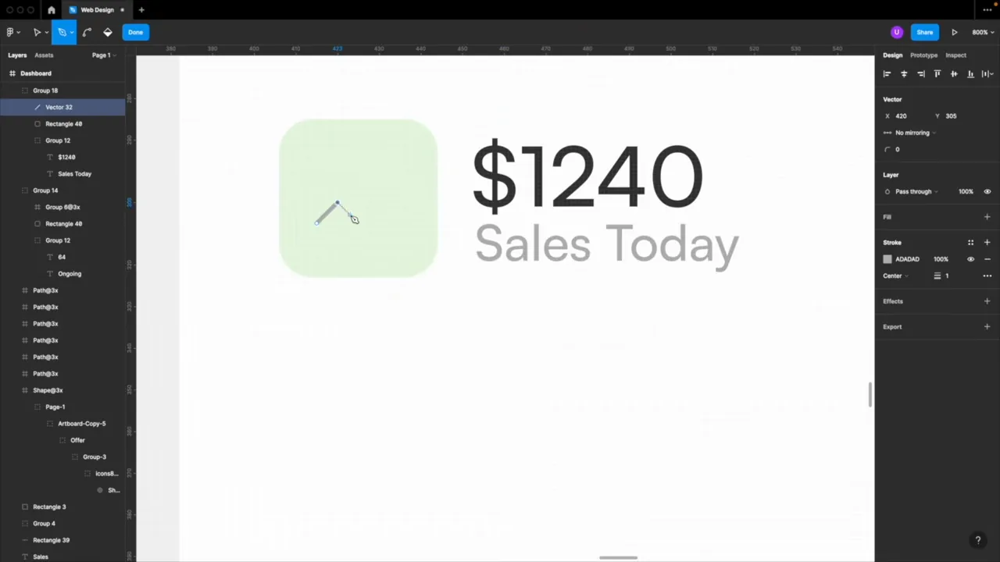
그래프는 숫자와 맞아야 해요. 이번 달 최고가 45,000달러이고 지금이 둘째 주라면, 눈금은 0, 2.5k, 5k 정도가 된다고 계산해요. 맨 아래 기준선은 진하게, 나머지 눈금선은 짧고 연하게 그려요. 가로축 정보는 마우스를 올릴 때 보여 주는 걸로 하고 생략해요.
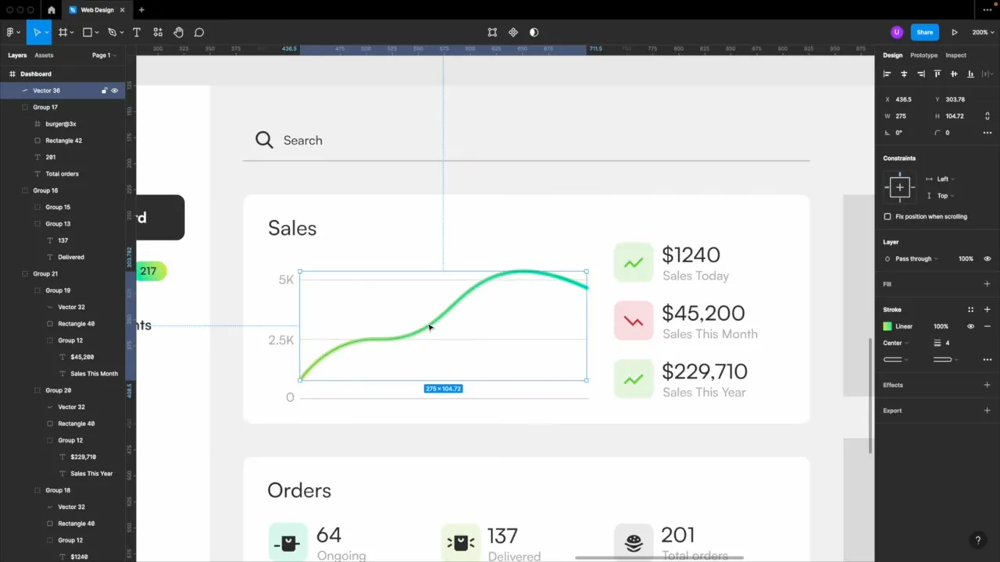
선 아래를 채운 뒤 아래로 갈수록 투명해지는 그라데이션을 넣는 방법도 보여 주지만, 이 화면은 단순하게 가려고 되돌려요. 제목 옆에는 테두리만 있는 'This Month' 드롭다운을 달아요. 안쪽 여백은 모두 8이에요.
오른쪽 칸: 혜택, 드라이버, 지도
흰 카드만 늘어서면 대시보드가 지루하고 읽기도 어려워요. 그래서 시각적으로 크고 진한 요소를 섞어요. 맨 위 '현재 혜택' 카드는 2E2E2E에서 4E4E4E로 가는 대각선 그라데이션이에요. 100달러 이상 주문하면 15% 할인이라는 문구에서 금액과 할인율만 굵게 하고, 설정 아이콘이 든 Manage offers 버튼을 달아요.
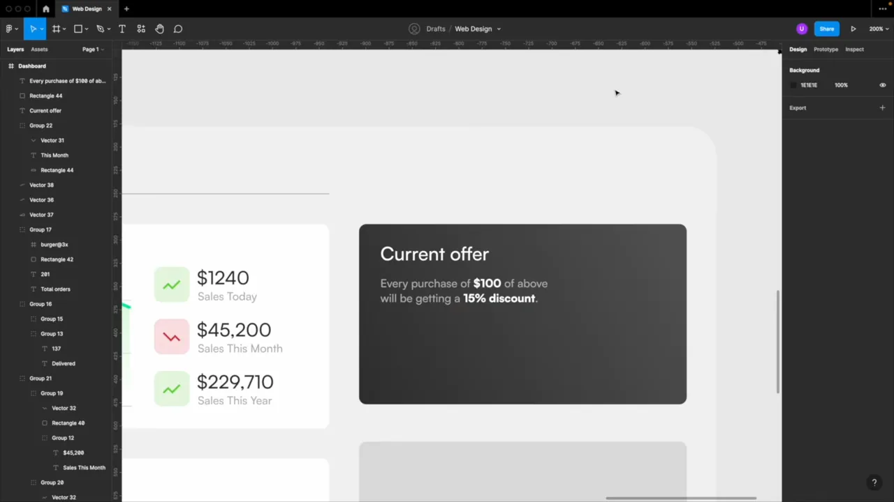
카드 오른쪽에는 반으로 자른 아보카도 3D 일러스트 두 개를 놓고, 카드 밖으로 튀어나온 부분은 마스크로 잘라요. 드리블 샷에서는 튀어나와도 보기 좋지만 대시보드에서는 아니라는 판단이에요. 버튼은 글과 따로 노는 요소라 제목·설명과 32 떨어뜨려요.
그 아래 흰 드라이버 카드에는 사진 36, 이름 14pt, 상태 한 줄을 넣어요. Kim은 2건 배달 중, Jon은 1건 배달 중, Mick은 휴식 중이에요. 오른쪽에는 앞에서 만든 스쿠터를 32 높이로 줄여 놓고, 휴식 중인 사람의 스쿠터는 회색으로 바꿔요. 오른쪽 위에는 'See all' 드롭다운을 둬요.
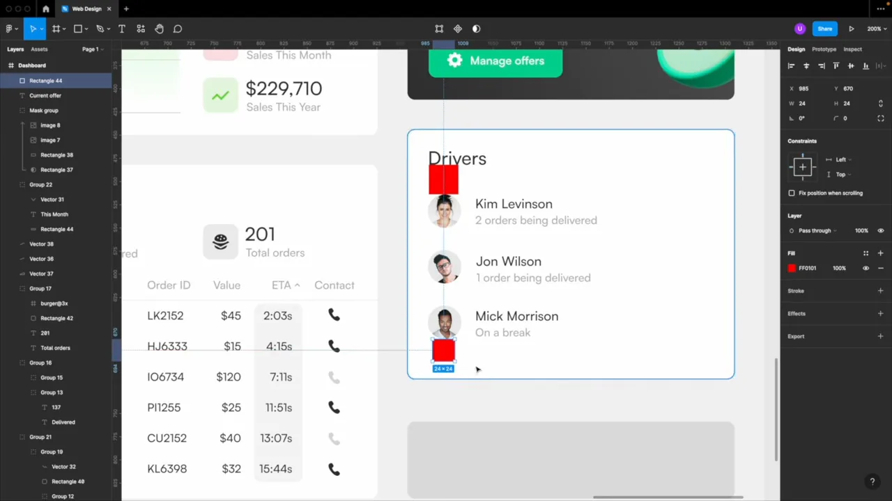
개발자와 일할 때는 바운딩 박스 기준으로 맞추는 편이 낫지만, 포트폴리오에서는 광학 정렬이 좋다고 해요. 글자 실제 모양의 위·왼쪽 끝을 기준으로 맞춘다는 뜻이에요.
마지막 칸은 지도예요. 피그마 플러그인 FigMap으로 뉴욕의 어두운 지도를 받아 마스크로 넣어요. 그 위에 2E2E2E에서 투명으로 가는 가로 그라데이션을 덮어 왼쪽을 어둡게 하고, 흰 'Expand map' 글자와 화살표를 둬요. 화살표 굵기는 옆 글자 획 굵기와 맞춰요.
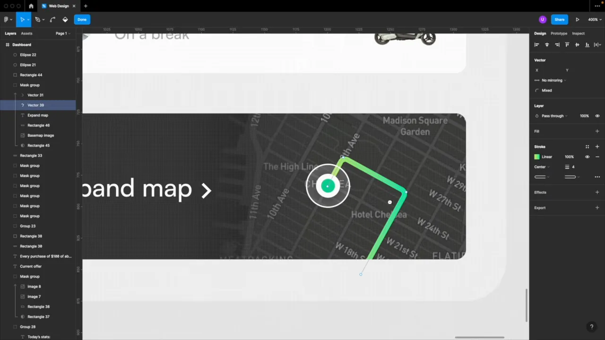
메뉴의 Anna 사진에 붙였던 초록 알림 점은 근무 중인 드라이버 사진에도 붙이고, 휴식 중인 Mick의 점은 회색으로 바꿔요. 오른쪽 위 빈자리에는 시각적으로 무겁지 않은 'Export CSV'와 'Today's stats' 버튼을 둬서 오늘 통계를 표로 내보낼 수 있게 해요.
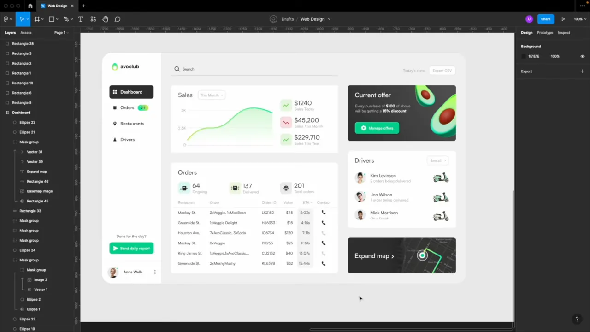
강사는 이 화면이 첫 버전이자 템플릿이라고 말해요. 실제 대시보드는 한 시간 남짓으로 끝나지 않으니 몇 가지는 타협했다는 거예요. 그래도 레드 스퀘어 메서드로 간격을 맞추는 정렬 기법은 어디서든 쓸모 있다고 해요.
주문 탭과 데이터 테이블
강사는 데이터 테이블이 거의 모든 웹앱에 나오지만 제대로 하기 어렵다고 해요. 대시보드를 복제해서 시작해요. 메뉴의 선택 상태는 다른 방식도 보여 줘요. 짙은 사각형 대신 메뉴 전체 폭을 연한 초록으로 칠하고, 오른쪽 끝에 4포인트 진한 초록 막대를 세워요. 둘 중 마음에 드는 걸 고르면 된다고 해요.
표를 전체 폭으로
오른쪽 블록을 다 지우고, 위에는 낮은 요약 띠를 둬요. 진행 중·배달 완료·합계와 오늘·이번 달 매출, 숫자 다섯 개가 한 줄에 들어가요. 좌우 24 안쪽 폭 879를 5로 나눈 175 보조선에 하나씩 맞춰요. 그 아래 32를 띄우고 표를 전체 폭으로 늘려요. 표는 아래로 스크롤되는 영역이라 아래쪽 모서리 둥글림은 없애요.
열은 기획 때 적은 대로 넣어요. 매장, 주문, 주문 ID, 고객 이름, 배달 주소, 금액, ETA, 드라이버, 상태예요. 고객은 이름만 써요. 성까지는 필요 없다는 판단이에요. 이름도 Michael, Jill, William, Adam처럼 글자 수가 다르게 골라요.
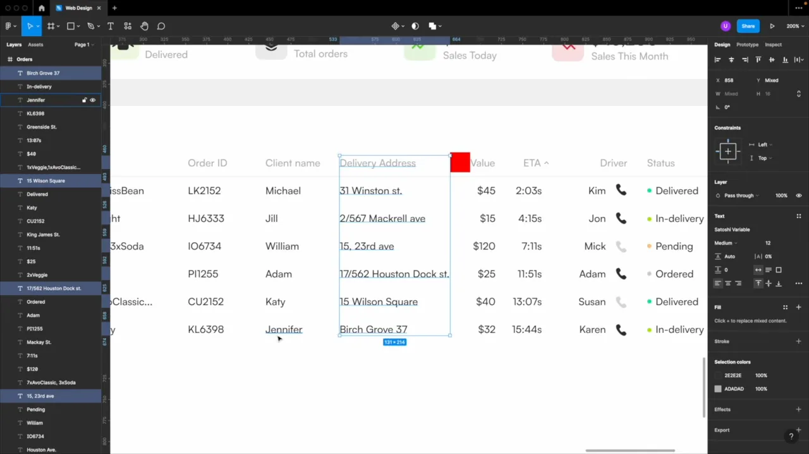
상태는 배달 완료, 배달 중, 결제 대기, 주문 접수 네 가지예요. 5~6포인트 점을 앞에 붙여요. 배달 중은 거의 끝났다는 뜻이라 완료와 비슷한 다른 초록, 결제 대기는 잘 보이는 주황이에요. 상태 열은 훑어보기 쉽게 표 맨 끝으로 옮겨요. 드라이버 이름은 바로 옆 전화 버튼과 붙어 보이도록, 이름 열로는 드물게 오른쪽 맞춤을 해요.
열 간격과 정렬
열 사이를 정하는 기준은 '길이를 예상할 수 있느냐'예요. 주문 ID, 금액, ETA처럼 길이가 거의 정해진 열은 24 정사각형으로 정확히 붙여요. 고객 이름은 길어질 수 있어 40을 최대로 두고, 배달 주소와 주문 내용은 가장 긴 값을 넣어 보고 자리를 넉넉히 둬요.
강사는 이 정렬을 표에서 가장 중요한 점으로 꼽아요. 가장 흔한 실수는 한 행만 살짝 들여 쓰거나, 행마다 글자 높이가 조금씩 다른 거예요. 1포인트만 어긋나도 바로 눈에 띄고 표 전체가 엉망으로 보인다고 해요.
| 열 | 맞춤 | 간격을 정하는 방법 |
|---|---|---|
| 매장, 주문, 고객 이름, 배달 주소 | 왼쪽 | 길이를 모르니 가장 긴 값을 넣어 보고 넉넉히 둬요. 고객 이름 뒤는 최대 40이에요 |
| 주문 ID | 왼쪽 | 길이가 거의 같아서 다음 열과 24로 붙여요 |
| 금액, ETA | 오른쪽 | 가장 넓은 값(화살표가 붙은 ETA 열 이름 포함) 기준으로 24로 붙여요 |
| 드라이버 | 오른쪽(예외) | 옆 전화 버튼이 핵심 동작이라 붙여 보이게 해요 |
| 상태 | 왼쪽 | 맨 끝에 두어 색 점으로 훑어보게 해요 |
행 늘리기와 선택된 행
행을 여덟 개쯤 만들어 두면 더 지어낼 필요 없어요. 그대로 복제하되, 네 개만 복사해 뒤로 보내거나 마지막 여섯 개만 복사하는 식으로 순서를 섞어요. 표 아래쪽은 마스크로 잘라 행 하나가 걸쳐 보이게 해서 스크롤된다는 걸 보여 줘요.
표를 하나 더 복제해 행 하나가 선택된 상태도 만들어요. 행보다 사방으로 조금 큰 흰 사각형(모서리 8)을 깔고, 12 블러에 10% 정도의 옅은 그림자를 줘요. 이 디자인은 원래 그림자를 쓰지 않지만 깊이를 아주 조금 보여 주려는 거예요. 선택된 행의 글자들은 가운데를 향해 4~12포인트씩 살짝 옮겨, 행이 도드라져 보이게 해요.
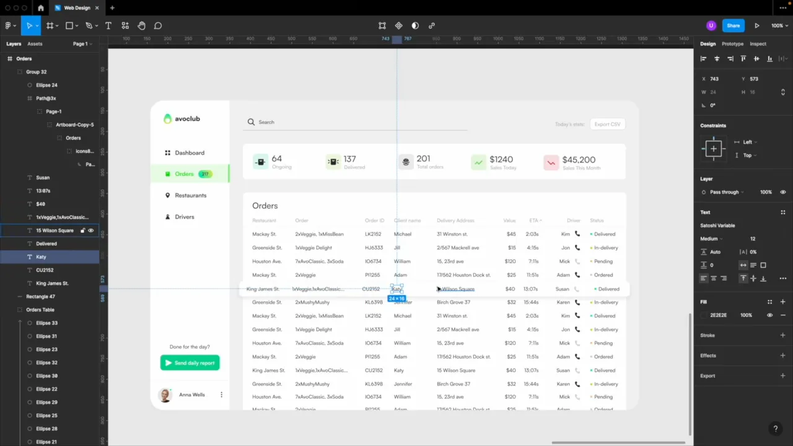
그림자 대신 두 초록의 대각선 그라데이션 테두리를 두르거나, 아주 옅은 색을 깔아도 돼요.
다 만든 뒤에 다시 보기
마지막으로 표 전체를 다시 훑어보며 고쳐요. 빠진 전화 아이콘을 되살리고, 이미 배달된 주문에는 ETA 대신 '-'를 넣어요. 결제 대기나 접수 상태는 결제·조리·배달 시간을 합쳐 예상할 수 있으니 ETA를 남겨요. 관리자에게 중요한 금액만 굵게 하고, 덜 중요한 매장 이름은 8E8E8E로 연하게 해서 표가 덜 단조로워지게 해요.
한 줄씩 건너 연한 배경을 까는 줄무늬도 쓸 수 있다고 해요. 아래 화면은 둘째 행 위에 회색 띠를 막 올린 순간이에요. 이 띠를 아주 연하게 바꾸고, 바로 다음 행이 아니라 한 행 건너 다음 행에 복제해요.
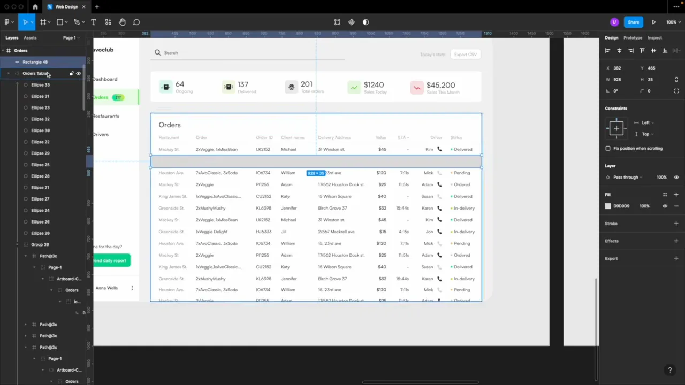
행 구분선을 쓸 때는 모든 행에서 대문자와 위·아래 선 사이 거리가 같아야 해요. 강사는 여백이 충분하면 줄무늬도 구분선도 필요 없다고 보고, 깔끔한 미니멀 버전으로 마무리해요.
매장과 상품 탭: 지도, 카드, 추가 시트
매장 탭으로 넘어가기 전에 콘셉트가 바뀌어요. 무료 사진 사이트에 사워도우 샌드위치 사진이 거의 없고 버거 사진은 많았거든요. 그래서 체인을 비건 버거집으로 바꾸고 이름도 Avoburger로 고쳐요. 쓸 만한 사진을 구할 수 없으면 못생긴 사진으로 버티지 말고 이 단계에서라도 방향을 바꾸는 게 낫다고 해요. 아이콘은 한 세트에서만 가져와요. 스타일이 다른 세트를 섞으면 안 돼요.
매장 탭: 목록과 지도
대시보드를 복제해 흰 카드 하나만 남기고 비워요. 오른쪽에는 넓은 지도를, 왼쪽에는 사진이 붙은 매장 목록을 둬요. 지도는 다시 FigMap 플러그인으로 뉴욕을 불러와요. 폭 800, 높이 1200에 2배 해상도로 받고, 너무 복잡하지 않게 적당히 확대한 영역을 써요.
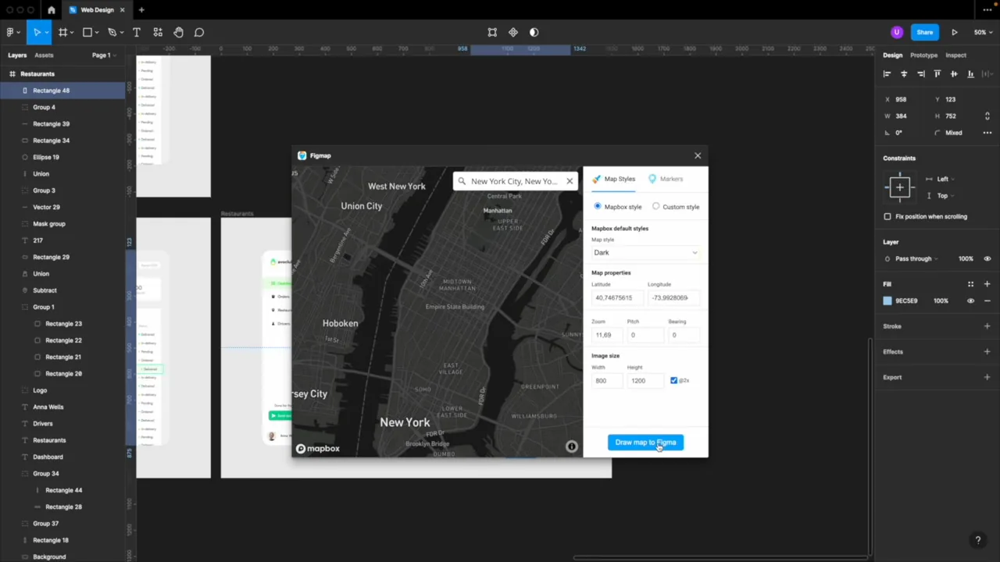
매장 위치는 48×48 흰 원 안에 로고 도형을 넣은 핀으로 표시해요. 매장이 네다섯 곳뿐이라 큼직하게 그려도 돼요. 문을 닫은 매장은 로고 그라데이션을 아주 연한 회색 단색으로 바꿔요.
지도 위 필터와 모서리 둥글림
지도 아래쪽에는 사방 24를 띄운 흰 막대를 얹고 '영업 중인 매장만 보기' 체크박스를 넣어요. 체크하면 닫은 매장 핀이 사라져요. 강사는 이렇게 필터를 누르기 전과 후를 보여 주면 케이스 스터디에서 좋은 인상을 준다고 해요.
막대 모서리는 미리 정한 숫자로 둥글리지 않아요. 바깥 지도처럼 32를 주면 알약 모양이 돼서, 오른쪽·아래 여백보다 대각선 여백이 커져 보이거든요. 그래서 눈으로 보며 16으로 줄여요. 그러면 막대 둘레로 비치는 지도 띠가 고르게 보여요. 막대 높이는 64로 표준화해요.
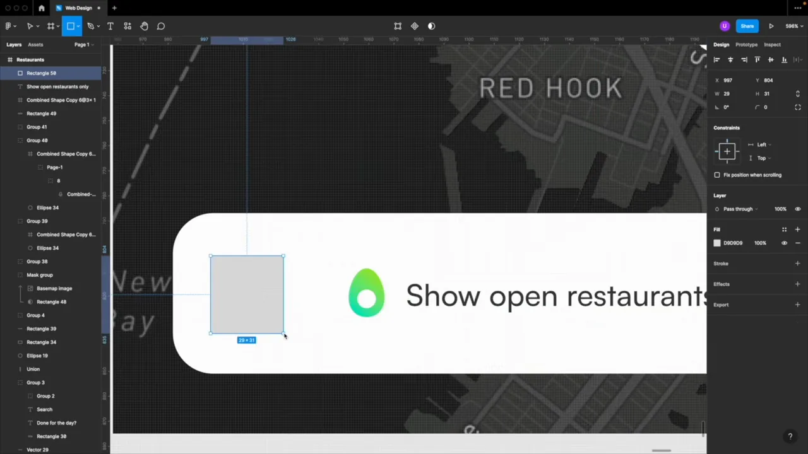
매장 카드
카드는 높이 160, 왼쪽 3컬럼은 매장 사진, 나머지는 정보예요. 매장 이름과 주소(16pt Black), 영업시간(오전 10시~오후 9시, 월~토, 일요일 휴무)을 넣어요. 그 아래에는 Manage restaurant 버튼과 전화·메일 버튼 두 개를 둬요.
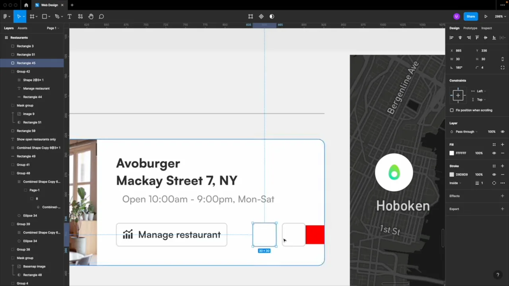
이 화면은 위아래에 다른 요소가 없어서 메인 그리드를 따르지 않고 카드 안에서 24 기준으로 따로 맞춰요. 버튼이 작으니 모서리는 4로 줄여요. 카드 오른쪽 위에는 작은 로고를 둬서 영업 중임을 표시하고, 카드 사이는 32를 띄워요. 마지막 카드는 화면 밖으로 살짝 나가게 둬서 목록이 스크롤된다는 걸 보여 줘요.
매장 사진도 사람 사진처럼 다듬어요. 채도가 튀는 버거 사진은 채도를 낮추고 노출을 조금 올려요. 체인 인테리어라는 설정에 맞게 식물이 많은 모던하고 미니멀한 공간만 골라요. 벽돌에 그라피티가 있는 곳이 하나 섞이면 어울리지 않는다는 이유예요.
색이 있는 지도와 closed 배지
같은 화면을 복제해 FigMap의 기본 컬러 지도(streets)로 바꿔 보기도 해요. 밝은 지도에서는 흰 핀이 묻혀서, 플랫 디자인이지만 기본 그림자(Y 4, 블러 4, 25%)를 핀에 넣어요. 카드에는 매장별로 다른 거리 이름을 넣고, 누수로 문을 닫은 Houston Avenue 매장의 로고를 회색으로 바꿔요.
로고 색만으로는 모든 사람이 알아보지 못하니, 사진 왼쪽 위에 'closed' 배지를 하나 더 달아요. 배지는 12pt 볼드, 흰 배경, 모서리 8에서 8포인트 떨어진 자리예요. 둥글림은 2로 아주 조금만 줘요.
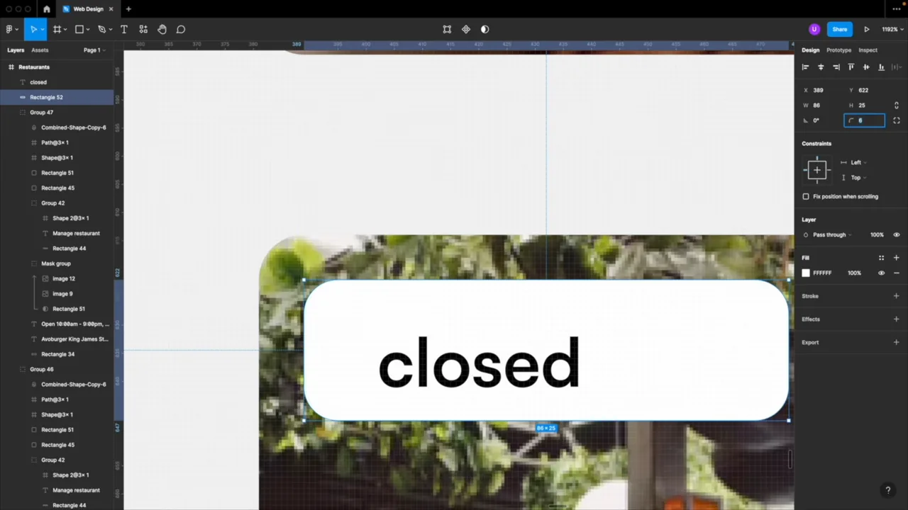
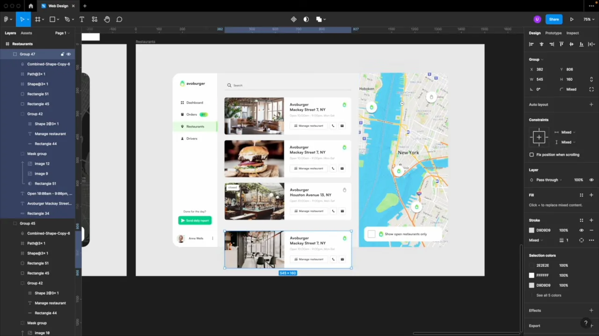
상품 탭: 소프트 그리드 카드
강의 예약 판매가 목표치를 넘어서 덤으로 추가된 탭이에요. 메뉴에 Products 항목을 넣고, 모든 화면의 메뉴를 같은 자리에 붙여 넣어요. 화면을 넘겨 볼 때 메뉴가 조금이라도 움직이면 어색하기 때문이에요.
상품은 카드 그리드로 보여 줘요. 여기서는 12컬럼 그리드 대신 소프트 그리드를 써요. 좌우 끝에 32를 두고, 카드 네 장이면 사이에 32가 세 개 더 필요하니 32 정사각형 다섯 개를 가로로 고르게 분배해요. 남은 자리가 카드 폭이 돼요.
카드에는 배경을 지운 버거 사진(110)이 카드 위로 최대 16까지 삐져나오게 올라가요. 이름, 무게(350g), 재료, 가격(17.99달러), 보기·설정 버튼이 들어가요. 재료는 사진에 실제로 보이는 것만 적으라고 해요. 사진에 피클이 보이면 피클을 쓰는 식이에요.
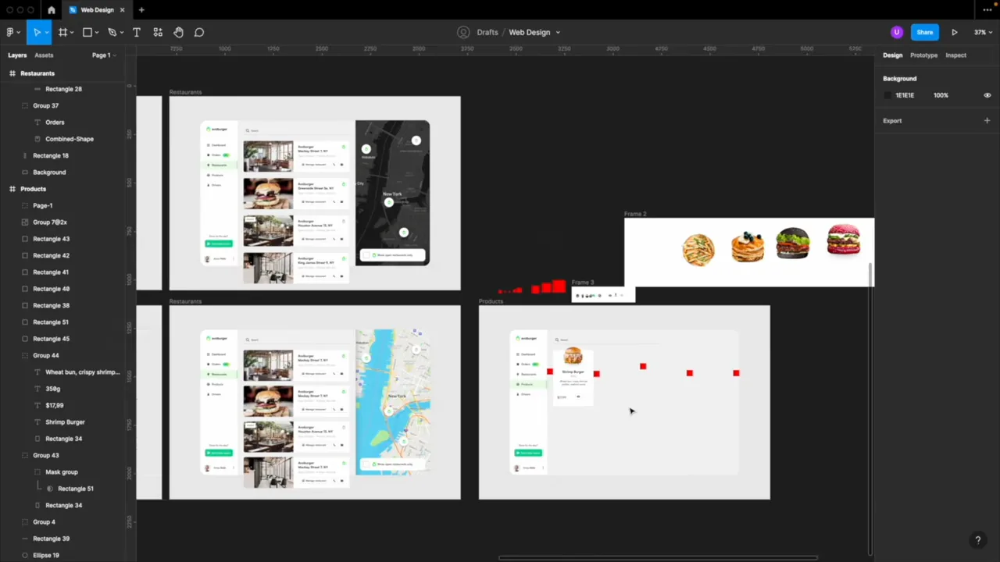
그림자가 없는 사진에는 타원에 레이어 블러(9 정도)를 주고 밝기를 낮춰 사진 아래 깔아요. 위에서 찍은 접시라면 그림자를 둥글게 펴요. 카드를 아래 줄로 복제할 때는 빵 꼭대기가 아니라 카드 기준으로 맞춰요. 비건 메뉴에는 카드 위쪽 모서리에서 16 떨어진 자리에 잎 아이콘을 달아요.
분류 탭과 새 상품 추가
카드 위에는 높이 64의 흰 띠를 두고 Main courses, Side dishes, Drinks, Other 탭을 넣어요. 각 탭 앞의 아이콘(버거, 수프, 음료, 아이스크림)은 글자와 8 떨어뜨려요. 첫 탭은 왼쪽에서 24, 탭 사이는 그 두 배인 48이에요. 선택 표시는 글자 아래 4포인트 선이에요.
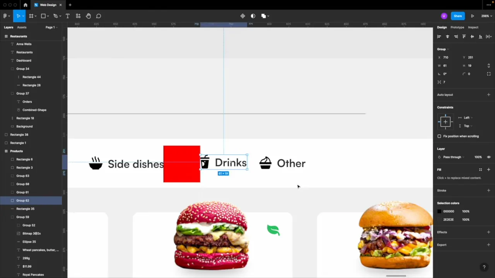
탭 오른쪽 끝에는 점 세 개 메뉴를 둬요. 빈 마지막 칸에는 회색 테두리 카드에 플러스 아이콘과 'Add New Product'를 넣어요. 가격을 초록으로 칠하는 것도 해 볼 수 있지만 과하다고 보고 짙은 색으로 둬요. 수정할 수 없는 상품 하나에는 빗금 친 눈 아이콘을 넣어 변화를 줘요.
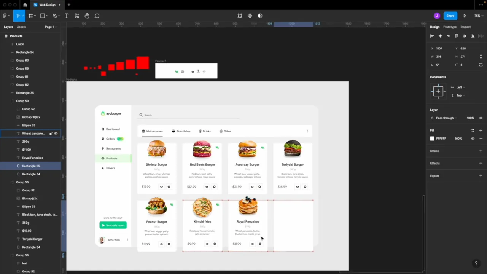
오른쪽에서 열리는 추가 시트
'Add New Product'를 누르면 화면 오른쪽 전체에 검정 40% 오버레이가 덮이고, 오른쪽에서 4컬럼 폭 흰 액션 시트가 밀려 나와요. 시트는 더 가까이 있고 아래 화면이 복잡하니, 안쪽 정렬은 32로 넉넉히 해요. 닫기 버튼은 대각선 두 개를 합쳐 만들어요.
폼 항목은 상품 이름, 재료, 비건 여부 체크박스, 무게(g)와 칼로리, 가격, 사진 업로드예요. 라벨은 14pt 볼드로 잘 보이게 하고, 입력칸 높이는 40이에요. 무게와 칼로리 두 칸은 (320−24)÷2=148씩 나눠 사이 24를 둬요. 가격 칸 안에는 왼쪽에서 16 떨어진 달러 기호를 넣어요.
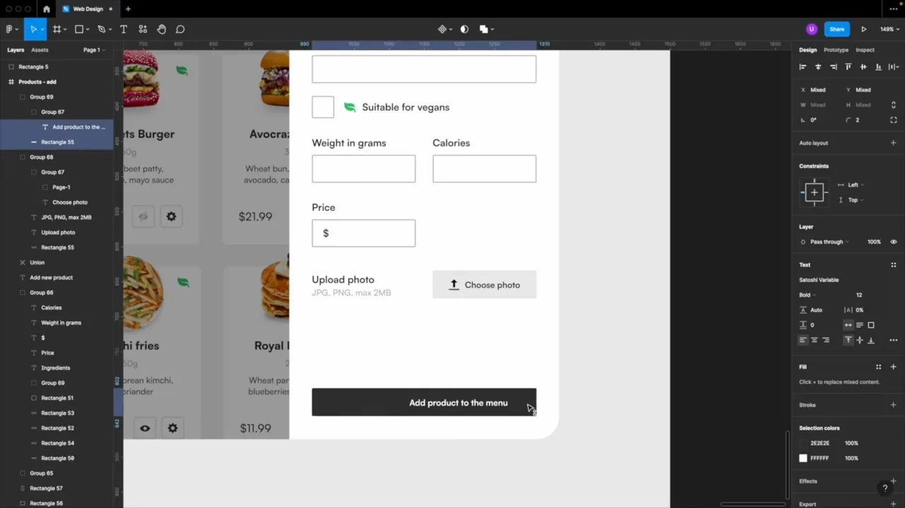
라벨과 입력칸 사이를 24로 해 보니, 위 칸과의 거리와 너무 비슷해서 어느 라벨이 어느 칸 것인지 헷갈렸어요. 그래서 항목 사이를 32로 벌려요. 여기서도 근접성 원칙이 쓰여요. 상품 추가 버튼은 높이 44, 사방 32 여백, 플러스가 붙은 상품 아이콘을 글자에서 8 떨어뜨려요. 강사는 입력칸이 크고 테두리가 두꺼운 폼이 요즘 소비자용 제품 느낌이라고 해요. 항목이 많은 전문가용 제품이라면 칸 높이를 30쯤으로 줄이고 선을 가늘게 한다고 해요.
재료 칸은 미리 채운 모습도 보여 줘요. 재료를 쓰고 탭이나 엔터를 누르면 지울 수 있는 태그가 되는 방식이에요. 태그는 작은 글씨에 X 아이콘을 붙이고, 칸 안에서 사방 8을 띄워요.
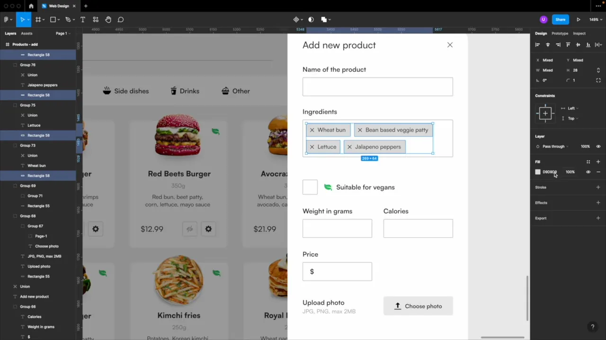
마지막으로 간격을 다시 맞춰요. 비건 체크박스는 재료에 속하니 32로 붙이고, 사진 업로드 묶음은 성격이 달라서 40으로 떼어요.
드라이버 탭과 상세 시트
마지막 탭은 드라이버예요. 상품 화면을 복제해 카드를 지우고 시작해요. 스쿠터처럼 무료 사진에서 폭스바겐 소형차도 따내고, 같은 색 오버레이를 얹어 브랜드 색에 맞춰 둬요.
탭 두 개와 추가 버튼
분류 탭은 두 개만 남겨요. 드라이버 목록과 차량 목록이에요. 차량은 정비, 수리, 보험처럼 사업체가 따로 챙겨야 할 게 많아서 탭을 나눠요. 탭 사이는 48이고, 선택 표시 선은 글자 폭에 맞춰 줄여요. 오른쪽 끝에는 앞에서 만든 짙은 버튼을 가져와 '+ Add driver/vehicle'로 바꾸고 높이를 40으로 줄여요.
다른 모양의 데이터 테이블
표는 처음부터 새로 만들어요. 탭이 이미 '드라이버 목록'이라고 말해 주니 표 안에 제목을 반복하지 않고 바로 열 이름부터 시작해요. 열은 이름, 상태, 현재 배달 ID, 누적 배달 수, 차량, 차량 ID이고 오른쪽 끝에 동작 버튼을 둬요. 주문 표와 달라 보이도록 글씨를 일부러 키워요.
상태는 주문 표의 색 점을 가져오되 드라이버에 맞게 바꿔요. 회색은 '휴식 중' 대신 'Idle'이라고 써요. 배달 ID는 'JK2365'처럼 영문 두 글자와 숫자로 지어요. 그래야 행마다 달라 보여요. 차량 아이콘은 24로 줄인 장식이에요. 차가 스쿠터보다 크지만 아이콘이니 같은 크기로 둬요.
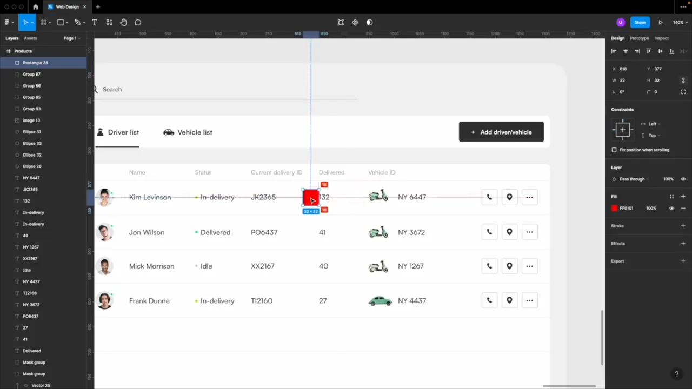
드라이버에게 문자를 보낼 일은 이 화면에서 없다고 보고, 동작 버튼은 전화, 지도에서 위치 찾기, 더보기(가로 점 세 개)로 해요. 행은 사진 위아래에 16씩, 구분선을 복제하며 같은 높이로 쌓아요. 표가 커서 열 사이는 24 대신 32를 써요.
이름은 길어질 수 있으니 상태 열과 32로 붙이지 않아요. 상태와 배달 ID는 길이가 대체로 일정해서 붙여요. 숫자는 여기서도 오른쪽에 맞춰요. 이름 외의 열을 모두 오른쪽으로 밀어 이름 자리를 넓히고, 가장 중요한 이름은 볼드로 바꿔요. 표 끝 사람은 마스크로 잘라 스크롤된다는 걸 보여 줘요.
시간을 아끼려고 같은 사람들을 복제하지만, 강사는 사람만큼은 최종본에서 사진과 이름을 꼭 다르게 바꾸겠다고 해요. 주문은 비슷해도 넘어가지만 사람은 그렇지 않다는 거예요.
드라이버 상세 시트
행을 누르면 상품 추가 때와 같은 오버레이와 오른쪽 시트가 열려요. 이번에는 폼이 아니라 진행 상황을 보여 주는 상세 화면이에요. 새 드라이버 추가 폼은 앞의 상품 폼을 바탕으로 직접 만들어 보라고 해요.
맨 위에는 Kim의 사진(44)과 이름(16pt 볼드), '2 orders being delivered', 가입일(2021년 3월 23일)과 누적 배달 132건을 넣어요. 누적 배달 수는 목록 표와 같은 숫자여야 해요. 구분선 아래는 차량 영역이에요. 36으로 키운 스쿠터 아래에 레이어 블러 타원 그림자를 깔고, 'Vespa SE'와 차량 번호를 적어요. 오른쪽에는 'In good condition' 배지를 둬요. 배지 바탕은 스쿠터 색을 아주 밝게, 글자는 같은 초록을 어둡게 해서 너무 튀지 않게 해요.
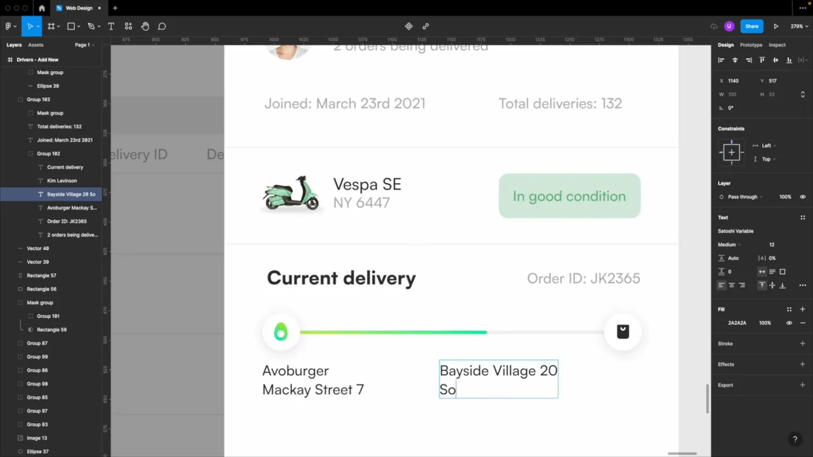
진행 바는 높이 3, 사방 32 여백의 둥근 막대 두 개예요. 위 막대에 로고 그라데이션을 입혔는데 너무 어두워서 구분선 색으로 바꾸고, 그라데이션 방향을 뒤집어 회색 바탕에서도 보이게 해요. 양 끝 원의 그림자는 불투명도 12%, 블러 12로 부드럽게 해요. 출발·예정 시각(12:32 PM(Post Meridiem), 12:49 PM)은 가장 작은 10pt로 써요.
지도 위 배달 경로
시트 아래쪽은 지도예요. 매장 핀, 지금 가고 있는 배달지, 이후 배달지 두 곳을 올려요. 드라이버 현재 위치에는 대시보드의 초록 위치 점을 다시 써요. 지나온 길은 실선 그라데이션으로, 일방통행 거리도 있을 수 있으니 실제 도로를 따라 꺾어 그려요. 꺾이는 곳에는 4 정도 둥글림을 줘요.
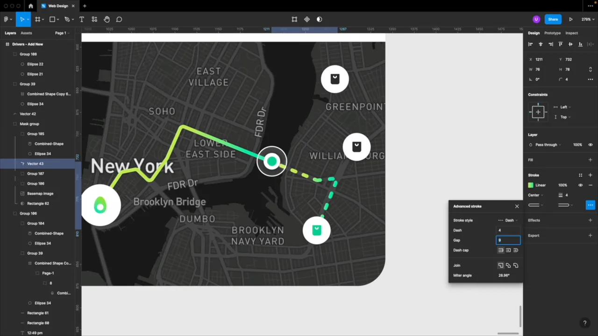
그라데이션 선이 싫다면 단색 선으로 바꿔도 된다고 해요. 강사는 어두운 지도 위에서는 그라데이션이 특히 보기 좋다고 봐요. 컬러 지도를 쓸 때는 그림자를 넣고 선 색을 지도에 맞게 바꾸라고 덧붙여요.
로그인 화면과 접는 메뉴
로그인 화면은 좁아야 보기 좋아요. 입력칸을 넓게 펼치면 어색하고, 가운데에 작은 폼만 두면 지루해요. 그래서 화면을 반으로 나누는 방법을 보여 줘요.
반은 폼, 반은 사진
상품 추가 화면을 복제해 버튼, 입력칸, 로고만 남기고 다 지워요. 오른쪽 6컬럼에 폼을, 왼쪽 6컬럼과 거터 하나에는 매장 사진을 마스크로 넣고 왼쪽 모서리를 32로 둥글려요. 6컬럼도 입력칸으로는 너무 넓어서 가운데 4컬럼만 써요. 강사는 이게 입력칸 폭의 최대라고 봐요.
항목은 이메일 주소와 비밀번호예요. 'Forgot password?'는 비밀번호 라벨과 같은 줄 오른쪽에 연한 AEAEAE로 둬요. 데스크톱은 커서가 손가락보다 정밀해서 이렇게 작은 링크도 누르기 쉽다는 이유예요. 오른쪽 바탕은 흰색으로 바꿔 더 친근하게 해요.
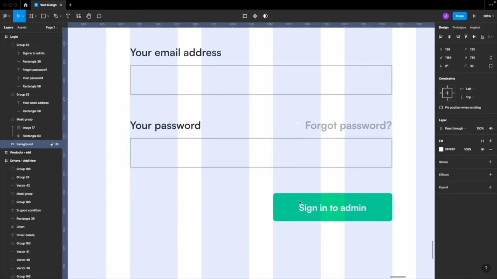
버튼을 오른쪽에 둘지 왼쪽에 둘지는 F 패턴이냐 Z 패턴이냐 하는 논쟁과 관계없이 차이가 작고, 결국 취향이라고 해요. 입력칸 모서리가 2라서 버튼은 4로 조금 더 둥글리고, 높이를 44로 해서 40인 입력칸과 헷갈리지 않게 해요. 버튼 글자 왼쪽에는 열쇠 아이콘을 8 떨어뜨려 둬요.
제목, 접근 요청, 세로 가운데
제목은 'Sign in to Avoburger Admin'이에요. 글자 크기를 키워 가며 4컬럼 폭에 닿는 28로 정해요. 아래 'Please enter your details below to sign in'은 조금 중복이지만 화면을 더 보기 좋게 만든다고 해요.
관리자 화면은 아무나 가입할 수 없고 누군가 추가해 줘야 해요. 그래서 가입 버튼 대신 오른쪽 위에 'Request access' 버튼(높이 36, 좌우 24)을 둬요. 덜 중요한 버튼이라 일부러 낮게 해요. 옆의 'Don't have an account?' 문구는 오른쪽 정렬이라 그리드를 신경 쓰지 않아도 돼요. 독일어처럼 긴 언어로 바뀌어도 왼쪽으로 늘어나면 돼요.
간격은 제목과 부제목 사이 24, 부제목과 첫 입력칸 사이 48, 입력칸 사이 40, 마지막 칸과 버튼 사이 40이에요. 입력칸끼리 한 묶음으로 보이게 48보다 작은 40을 써요. 묶음 전체는 프레임 세로 가운데에 맞춰서 위아래가 195씩 남아요. 여백이 많아도 왼쪽에 시각 요소가 있으니 두려워할 필요가 없다고 해요.
왼쪽: 로고와 후기 캐러셀
사진 위에 검정→투명 세로 그라데이션을 덮고, 흰색으로 바꾼 로고를 40 크기로 키워요. 위치는 오른쪽 폼처럼 왼쪽 6컬럼 중 가운데 4컬럼에 맞춰요. 그 아래 흰 글씨로 매장 후기를 넣고 돌아가며 보이게 해요. 로그인 화면을 그냥 꾸미는 대신 제품이 무엇인지 맥락을 주는 장치예요. 서점이라면 서점 후기, 암호화폐 거래소라면 코인에 달린 댓글을 넣으면 된다고 해요.
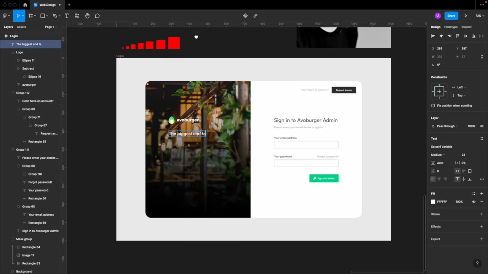
작성자 Kevin의 사진은 36 원 안에 얼굴 주요 부분이 가운데 오게 넣고, 이름은 16pt로 사진과 16 떨어뜨려요. 이름 앞에 폭 24, 굵기 2의 흰 선을 그어 인용 느낌을 줘요. 작성자 묶음은 후기 글과 24, 후기 글은 로고와 40이에요. 작성자가 글에 더 가까워야 하기 때문이에요. 로고에만 옅은 그림자를 주고 글자와 사진에는 그림자를 주지 않아요.
맨 아래에는 캐러셀 위치를 보여 주는 8×8 점 다섯 개를 둬요. 첫 점만 채우고 나머지는 흰 테두리만 남겨요. 점 사이는 8이고, 화면 아래에서 64 위에 가운데 정렬해요. 후기 바로 밑에 붙이지 않는 이유는, 이 점들이 사진까지 함께 바뀌는 영역 전체의 위치를 보여 주기 때문이에요.
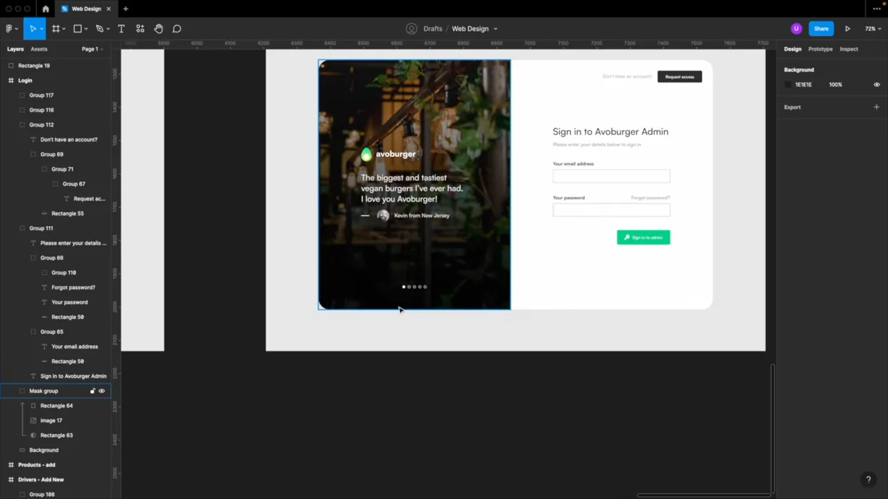
복제본으로 이메일이 입력된 상태도 만들어요. 왼쪽에서 12 떨어진 자리에 이메일을 넣고, 제대로 입력됐다는 뜻으로 칸 테두리를 초록으로 바꿔요. 후기 끝에는 하트 아이콘을 붙여요. 실제 사람들은 이모지나 그림을 섞어 쓰니 더 사람다워 보인다는 이유예요.
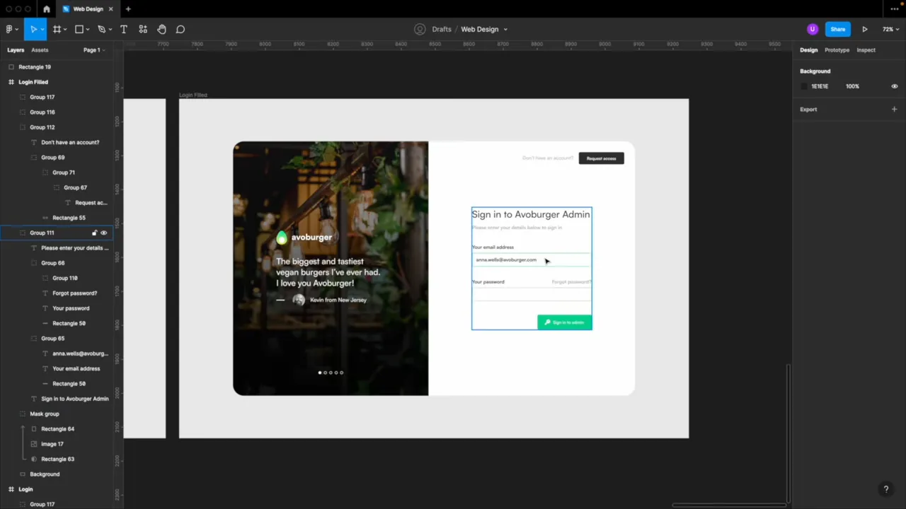
아이콘만 남긴 접는 메뉴
마지막으로 주문 탭을 복제해 메뉴를 접은 버전을 만들어요. 열이 많은 표에 자리를 더 주려는 거예요. 메뉴 글자, 관리자 이름, 버튼 글자를 지우고 2컬럼이던 메뉴를 1컬럼으로 줄여요. 아이콘, 로고, 프로필 사진을 메뉴 가운데에 세로 정렬하고, 아이콘은 조금 키워요. 아이콘 사이를 다시 40으로 맞추고, 주문 배지는 아이콘에 살짝 겹치게 올려요. Send daily report 버튼은 사방 24의 정사각형 버튼이 되고, 프로필 메뉴는 사진을 누르면 열리게 해요.
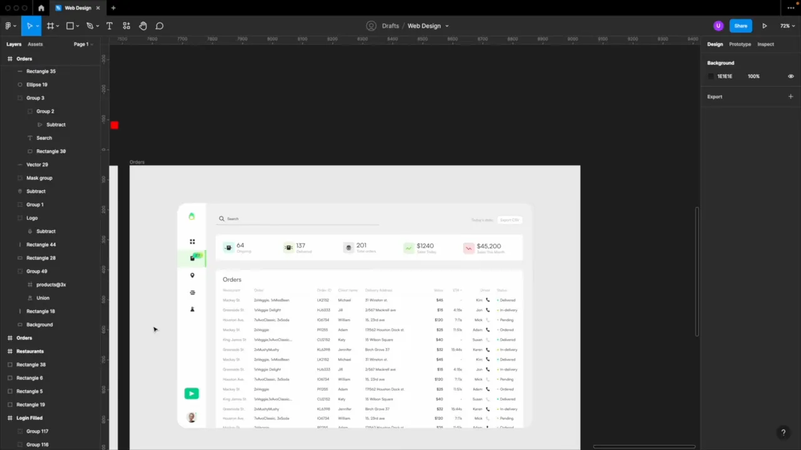
표 열은 새로 생긴 자리만큼 다시 배치해요. 이번에는 24 정사각형을 양 끝과 그 사이에 대충 놓고, 여섯 개를 모두 골라 '가로로 고르게 분배'로 간격을 맞추는 방법을 보여 줘요. 앞의 나눗셈 방법과 둘 중 편한 걸 쓰면 돼요. 실제 제품에서는 마우스를 메뉴에 올리면 표 위로 메뉴가 펼쳐졌다가, 커서가 나가면 다시 접히게 하면 된다고 해요.
강의를 마치며
강사는 이 과정으로 대시보드, 주문 탭, 목록이 붙은 지도, 카드 그리드, 다른 모양의 데이터 테이블, 사이드 오버레이, 상품 추가 시트와 로그인 폼, 접는 메뉴까지 만들었다고 정리해요. 이 블록들로 이제 직접 실험해 보라고 해요. 드리블, 비핸스, 실제 제품에서 영감을 얻되 자기만의 제품을 만들라는 거예요. 예를 들어 온라인 서점이라면 배달이나 드라이버 없이, 오른쪽 칸에 특가나 베스트셀러를 보여 주면 된다고 해요.